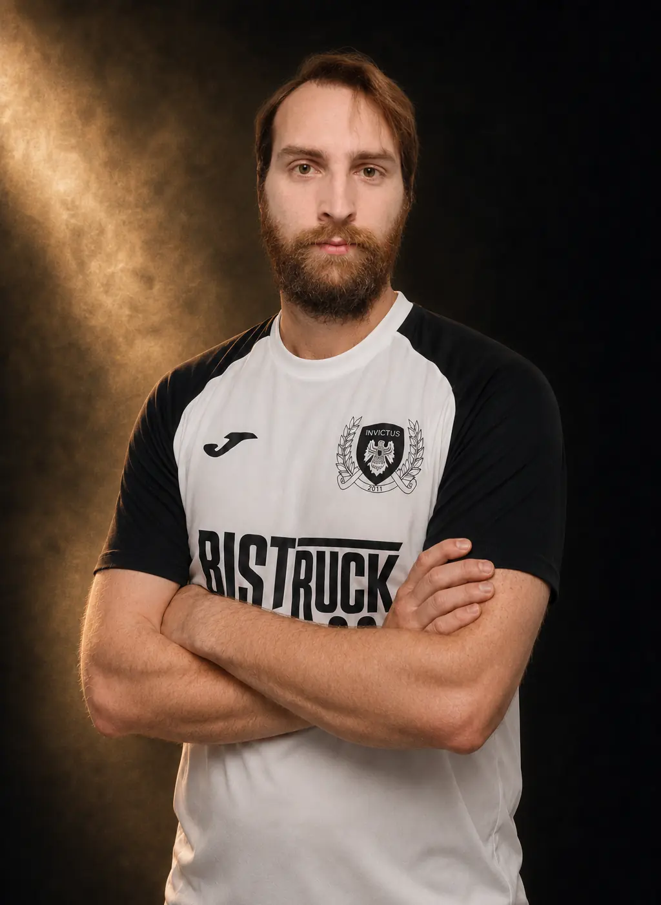

Hráčský profil · Invictus 2011
#11
Obránce
Filip Hrbek
Narozen 27.10.1992
30Zápasy
0Góly
5Žluté karty
0Červené karty
Dostupná evidence
Sezona po sezoně.
Individuální statistiky z veřejné databáze Futsalu Havířov.
| Sezona | Klub | Z | G | ŽK | ČK |
|---|---|---|---|---|---|
| 2015/16 | Invictus 2011 | 2 | 0 | 0 | 0 |
| 2020/22 | Slovan Havířov | 3 | 0 | 1 | 0 |
| 2024/25 | Invictus 2011 | 14 | 0 | 2 | 0 |
| 2025/26 | Invictus 2011 | 11 | 0 | 2 | 0 |
Statistiky zahrnují pouze dohledané ročníky ve veřejné databázi Futsalu Havířov. Aktualizováno 23. 7. 2026.